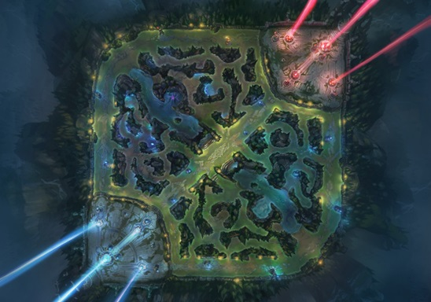

Hello there, welcome to a website about League Of Legends, League of Legends is a fast paced 5v5 MOBA that was first released in 2009. It has over 150 different and unique champions, with 5 distinct roles to choose from. The main game takes place on Summoners Rift, with 3 lanes, and the space in between being filled with a vast jungle, with massive monsters to hunt. Minions run down each lane, providing gold and experience to the champions that defeat them. The goal is to destory the enemy nexus, protected by powerful turrets.

There are 5 roles to choose from in League Of Legends. The Top Lane, filled with powerful melee fighters that have abilites that allow to them to close the distance between you and cut you down quickly. You’ll be taken down fast if you aren’t paying attention. Jungle, where champions defeat monsters for gold and experience and help their team in their lanes. Junglers will attack the opposing team in their lane, pincer attacking the enemy to score a takedown. Then there’s the Mid lane, with it’s large variety of champions. Mages cast spells to defeat enemies, while assassins dominate the lane with attacks and abilities to quickly kill their opponents. The final lane is the Bot lane, the lane of marksmen and long-ranged champions. These champions rely mainly on their auto attacks to put out damage, and while they may be weak early on, they become incredibly powerful once they get items and level up. Lastly, there is Support. These champions also reside in bot lane, and as the name implies they assist their marksmen in many ways. Healing, shielding, engage, etc. All of these are handled by the support. The support is unlike other roles as it doesn’t kill minions for gold, and thus has much less gold than the rest of their team. These 5 roles all have over 30 champions to choose from, so there’s no limits for finding a champion that suits you.
You can return to the top if you want.